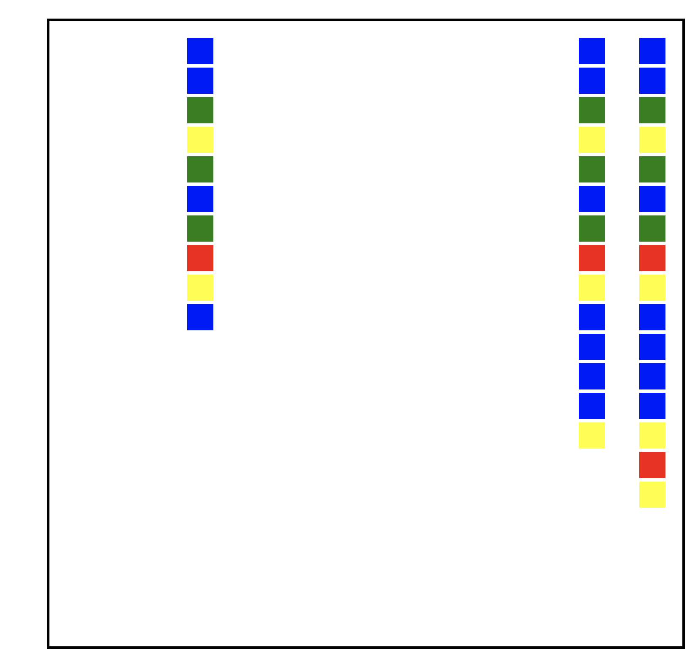

<!DOCTYPE html>
<html>
<head>

  <link rel="icon" type="image/x-icon" href="favicon.ico">

  <!-- Load jsPsych and jquery-->
  <script src="https://unpkg.com/jspsych@7.3.3"></script>
  <script src='https://cdnjs.cloudflare.com/ajax/libs/jquery/2.1.3/jquery.min.js'></script>
  <script src='https://cdnjs.cloudflare.com/ajax/libs/foundation/5.5.2/js/foundation.min.js'></script>
  <link href="https://unpkg.com/jspsych@7.2.3/css/jspsych.css" rel="stylesheet" type="text/css" />
  <link href="https://unpkg.com/jquery-ui-css@1.11.5/jquery-ui.css" rel="stylesheet" type="text/css" />


  <!-- Load jsPsych plugins-->
  <script src="https://unpkg.com/@jspsych/plugin-instructions@1.1.3"></script>
  <script src="https://unpkg.com/@jspsych/plugin-html-keyboard-response@1.0.0"></script>
  <script src="https://unpkg.com/@jspsych/plugin-html-button-response@1.0.0"></script>
  <script src="https://unpkg.com/@jspsych/plugin-survey-text@1.0.0"></script>
  <script src="https://unpkg.com/@jspsych/plugin-external-html@1.0.0"></script>
  <script src="https://unpkg.com/@jspsych/plugin-external-html@1.0.0"></script>
  <script src="https://unpkg.com/@jspsych/plugin-preload@1.0.0"></script>
  <script src="https://unpkg.com/@jspsych/plugin-html-slider-response@1.1.2"></script>
  <script src="https://unpkg.com/@jspsych/plugin-browser-check@1.0.0"></script>
  <script src="https://unpkg.com/@jspsych/plugin-canvas-keyboard-response@1.1.2"></script>
  <script src="https://unpkg.com/@jspsych/plugin-call-function"></script>
  <script src="https://unpkg.com/@jspsych/plugin-fullscreen@1.2.0"></script>
  <script src="https://unpkg.com/@jspsych/plugin-survey-html-form@1.0.0"></script>
  <script src="https://unpkg.com/@jspsych/plugin-survey-likert@1.1.2"></script>
  <script src="https://unpkg.com/@jspsych-contrib/plugin-pipe"></script>

  <!-- Load the global environment-->
  <script src="global-env.js"></script>

  

  <!-- Load custom plugins from directory-->
  <script src="plugin-line-learning.js"></script>
  <script src="helper-functions.js"></script>


  <!-- Some custom CSS-->


</head>
<body></body>
<script>


//////////////////////////////////
//         Gloabl Settings      //
//////////////////////////////////


// Initalise jsPsych
  const jsPsych = initJsPsych({
   on_interaction_data_update: function(data) {
     if(data.event == 'fullscreenexit'){in_fullscreen = false}

   },
 on_finish: function(data) {
   if(aborted == true){alert("You must use Chrome or Firefox to complete this experiment.")}
  if(aborted == false) {  if(jsPsych.data.get().filter({trial_type: "Summary Trial"}).select('correct').mean() < 0.55){window.location = attention_redirect_link} else {window.location = redirect_link}}
   // jsPsych.data.get().localSave('csv','mydata.csv');
}
})


// Settings (set these)

  const DataPipe_ID = "rOf6MP8qotlS" // The DataPipe ID for where the data should be stored

  const sona_experiment_id = "NA"; // The SONA experiment ID 
  const sona_credit_token = "NA"; // The SONA credit token 
  const Prolific_redirect = "CHGWKNI0"; // The Prolific redirect link (to credit)
  const Prolific_failed_check = "C13PIUOF"; // The Prolific redirect link to NOT credit (manual review)
  const no_practice_trials = 12


// Global parameters (might need to change)


  var in_fullscreen = true;
  var trialnum = 1;
  var blocknum = 0;
  aborted = false;

  var colour_set= jsPsych.randomization.sampleWithoutReplacement([30,30,20,20],4)
  var mono_label  = jsPsych.randomization.sampleWithoutReplacement(["Blicket", "Snarg"],1)

//////////////////////////////////


  // Browser Check


  var browser_check = {
    type: jsPsychBrowserCheck,
    inclusion_function: (data) => {
      return ['chrome', 'firefox'].includes(data.browser) && data.mobile === false;
    },
    exclusion_message: (data) => {
      aborted = true;
      return `<p>You must use Chrome or Firefox to complete this experiment.</p>`
    },
  };


// Enter Fullscreen

  var enter_fullscreen = {
    type: jsPsychFullscreen,
    message: '<p>To take part in the experiment, your browser must be in fullscreen mode. Exiting fullscreen mode will pause the experiment. <br></br>Please click the button below to enable fullscreen mode and continue.</p>',
    fullscreen_mode: true,
    on_finish: function(){
      in_fullscreen = true;
    }
  }


// Instructions


  var new_trianing_block = {
    type: jsPsychInstructions,
    on_start: function(){
      blocknum++;
    },
    pages: function(){
      blockinst = blocknum + 1;
      return ([
        '<h2>Training</h2> Block ' + blockinst + "/6"
        ])
    },
    show_clickable_nav: true,
    button_label_next: "Begin",
    allow_backward: false
  }


  var test_block_start = {
    type: jsPsychInstructions,
    pages: [
      'You will now complete the test block. There will be 32 test items. You will no longer receive feedback.'
      ],
    show_clickable_nav: true,
    button_label_next: "Begin",
    allow_backward: false

  }


  var instructions = {
    type: jsPsychInstructions,
    pages: function(){
      if(ratings_on == true) return [
        '<h1>Instructions</h1>In this study you will sort geometric configurations into two categories.<br><br>These categories are called "blickets" and "snargs".<br><br>Each configuration is either a "blicket" or a "snarg". <br><br>Your job is to learn to distinguish between blickets and snargs however you see fit.<br><br>There will be 6 training blocks where you will learn to categorise the configurations and receive feedback after each of your responses. After the training, there will be a test block.</p>' +
        '<p class="instructions">You will then rate your confidence in perfroming the task on the later test.</p>' +
        '<p class="instructions">Please do your best to rate your confidence accurately and do take advantage of the whole rating scale.</p>'

        ]
       if(ratings_on == false) return [
        '<h1>Instructions</h1>In this study you will sort geometric configurations into two categories.<br><br>These categories are called "blickets" and "snargs".<br><br>Each configuration is either a "blicket" or a "snarg". <br><br>Your job is to learn to distinguish between blickets and snargs however you see fit.<br><br>There will be 6 training blocks where you will learn to categorise the configurations and receive feedback after each of your responses. After the training, there will be a test block.</p>' 

        ]
     },
   show_clickable_nav: true
 }


 var debug = {
  type: jsPsychSurveyText,
  questions: [
    {prompt: 'Did you experience any issues while completing this study?', rows: 5}
    ]
}


/////////////// **********  LINE TRIAL  ***************************** ///////////////


var line_trial = {
  data: function(){
    return {trialnum: trialnum, blocknum: blocknum}
  },
  timeline: [

// Check Fullscreen
  {
    timeline: [

      {type: jsPsychFullscreen,
      message: '<p>You need to be in fullscreen mode to continue the experiment! <br></br> Please click the button below to enter fullscreen mode.<br></br><p>',
      fullscreen_mode: true,
      on_finish(){
        in_fullscreen = true;
      }
    }
    ],
    conditional_function: function(){
      if(in_fullscreen === true){
        return false;
      } else {
        return true;
      }
    }
  },


// Presentation
  {
    type: jsPsychLineLearning,
    trial_duration: 8000,
    category: jsPsych.timelineVariable('category'),
    line_lengths: function(){
     return jsPsych.randomization.sampleWithoutReplacement([3,8,13,18],3)
   },
   choices: ["Blicket", 'Snarg'],
   monotonic_label: mono_label,
   colour_prob: function(){

    if(jsPsych.timelineVariable('category') == 'Mono') return colour_set;
    if(jsPsych.timelineVariable('category') == 'noMono'){

        // Reversing the probabilities
      var nm1 = 50 - colour_set[0];
      var nm2 = 50 - colour_set[1];
      var nm3 = 50 - colour_set[2];
      var nm4 = 50 - colour_set[3];
      return [nm1, nm2, nm3, nm4];

    }},
    on_finish: function(data){
      data.trial_type = "Stimulus Response";
    }
  },


// Provide Feedback 
  {
    timeline: [

      {    type: jsPsychHtmlKeyboardResponse,
      choices: "NO_KEYS",
      trial_duration: 1000,
      stimulus: function(data){

        var last_trial_correct = jsPsych.data.get().last(1).values()[0].accuracy;

        if(last_trial_correct){
      return "<p style = 'font-size: 22pt; color: green;'>Correct</p>"; // the parameter value has to be returned from the function
    } else {
      return "<p style = 'font-size: 22pt; color: red;'>Wrong</p>"; // the parameter value has to be returned from the function
    }
  },
  on_finish: function(data){
    data.trial_type = "Feedback";

  }
}
],
    conditional_function: function(){
      if(provide_feedback === true){
        return true;
      } else {
        return false;
      }
    }
  },


// JOL
  {
    timeline: [

    {
      type: jsPsychHtmlSliderResponse,
      data: {trial_name: "cat_JOL"},
      stimulus: `<p>Please rate the likelihood that you will correctly indicate whether items are Blickets or a Snargs on a later test</p>`,
      require_movement: true,
      labels: ["0<br>(not at all)", "20", '40', '60', "80",'100<br>(definitely)'],
      on_finish: function(data){
        data.trial_type = "JOL";

      }

    }

    ],
    conditional_function: function(){
      if(ratings_on === false){
        return false;
      } else {
        return true;
      }
    }
  },

// Summary trial to store all the data typically required (nothing is displayed to the particpant) a
  {
    type: jsPsychCallFunction,
    func: function(data){

      accuracy = jsPsych.data.get().filter({trial_type: "Stimulus Response"}).select('correct').values;
      accuracy = accuracy.slice(Math.max(accuracy.length - 2, 0))


    },
    on_finish: function(data){

      data.rt = jsPsych.data.get().filter({trial_type: "Stimulus Response"}).last().values()[0].rt;
      data.response = jsPsych.data.get().filter({trial_type: "Stimulus Response"}).last().values()[0].response;
      data.choice = jsPsych.data.get().filter({trial_type: "Stimulus Response"}).last().values()[0].choice;
      data.category = jsPsych.data.get().filter({trial_type: "Stimulus Response"}).last().values()[0].category;
      data.correct = jsPsych.data.get().filter({trial_type: "Stimulus Response"}).last().values()[0].accuracy;

      if(provide_feedback == false & ratings_on == true){
        data.confidence = jsPsych.data.get().filter({trial_type: "Confidence Rating"}).last().values()[0].response;
        data.feedback = "False";
      } else {
        data.feedback = "True";
      }

      data.trial_type = "Summary Trial"
      trialnum++;

    }
  },


  ],
  timeline_variables: [
    {category: "Mono"},
    {category: "noMono"},
    ],
  randomize_order: true
};


/////////////// **********  TEST TRIALS  ***************************** ///////////////

// Define the 4 kinds of test trials

const crossMapped = {
 timeline: [
  {type: jsPsychLineLearning,
  data: {test_type: "Cross-mapped test trial"},
  category: jsPsych.timelineVariable('category'),
  line_lengths: function(){
    return jsPsych.randomization.sampleWithoutReplacement([3,8,13,18],3)
  },
  choices: ["Blicket", 'Snarg'],
  monotonic_label: mono_label,
  colour_prob: function(){
    if(jsPsych.timelineVariable('category') == 'noMono') return colour_set;
    if(jsPsych.timelineVariable('category') == 'Mono'){
      var nm1 = 50 - colour_set[0];
      var nm2 = 50 - colour_set[1];
      var nm3 = 50 - colour_set[2];
      var nm4 = 50 - colour_set[3];
      return [nm1, nm2, nm3, nm4];

    }
  },
  on_finish: function(data){
    data.trial_type = "Summary Trial"
    data.correct = data.accuracy;
    data.trialnum = trialnum;
    trialnum++;
    data.blocknum = "Test";
  }

}],
 timeline_variables: [
  {category: "Mono"},
  {category: "noMono"},
  ],
 randomize_order: true,
 repetitions: 4
}


const baseline = {
 timeline: [
  {type: jsPsychLineLearning,
  data: {test_type: "Baseline trial"},
  category: jsPsych.timelineVariable('category'),
  line_lengths: function(){
    return jsPsych.randomization.sampleWithoutReplacement([3,8,13,18],3)
  },
  choices: ["Blicket", 'Snarg'],
  monotonic_label: mono_label,
  colour_prob: function(){
    if(jsPsych.timelineVariable('category') == 'Mono') return colour_set;
    if(jsPsych.timelineVariable('category') == 'noMono'){
      var nm1 = 50 - colour_set[0];
      var nm2 = 50 - colour_set[1];
      var nm3 = 50 - colour_set[2];
      var nm4 = 50 - colour_set[3];
      return [nm1, nm2, nm3, nm4];

    }
  },
  on_finish: function(data){
    data.trial_type = "Summary Trial"
    data.correct = data.accuracy;
    data.trialnum = trialnum;
    trialnum++;
    data.blocknum = "Test";
  }

}],
 timeline_variables: [
  {category: "Mono"},
  {category: "noMono"},
  ],
 randomize_order: true,
 repetitions: 4
}


const feature = {
 timeline: [
  {type: jsPsychLineLearning,
  data: {test_type: "Feature trial"},
  category: jsPsych.timelineVariable('category'),
  line_lengths: function(){
   x = jsPsych.randomization.sampleWithoutReplacement([6,7,8,9,10,11,12,13,14,15,16,17,18],1)
   return [x[0],x[0],x[0]]
 },
 choices: ["Blicket", 'Snarg'],
 monotonic_label: mono_label,
 colour_prob: function(){
  if(jsPsych.timelineVariable('category') == 'Mono') return colour_set;
  if(jsPsych.timelineVariable('category') == 'noMono'){
    var nm1 = 50 - colour_set[0];
    var nm2 = 50 - colour_set[1];
    var nm3 = 50 - colour_set[2];
    var nm4 = 50 - colour_set[3];
    return [nm1, nm2, nm3, nm4];

  }
},
on_finish: function(data){
  data.trial_type = "Summary Trial"
  data.correct = data.accuracy;
  data.trialnum = trialnum;
  trialnum++;
  data.blocknum = "Test";
}

}],
 timeline_variables: [
  {category: "Mono"},
  {category: "noMono"},
  ],
 randomize_order: true,
 repetitions: 4
}


const relational = {
  timeline: [
    {type: jsPsychLineLearning,
    data: {test_type: "Relational trial"},
    category: jsPsych.timelineVariable('category'),
    line_lengths: function(){
      return jsPsych.randomization.sampleWithoutReplacement([3,8,13,18],3)
    },
    choices: ["Blicket", 'Snarg'],
    colour_prob: [25,25,25,25],
    monotonic_label: mono_label,
    colour_prob: function(){
      if(jsPsych.timelineVariable('category') == 'Mono') return colour_set;
      if(jsPsych.timelineVariable('category') == 'noMono'){
        var nm1 = 50 - colour_set[0];
        var nm2 = 50 - colour_set[1];
        var nm3 = 50 - colour_set[2];
        var nm4 = 50 - colour_set[3];
        return [nm1, nm2, nm3, nm4];

      }
    },
    on_finish: function(data){
      data.trial_type = "Summary Trial"
      data.correct = data.accuracy;
      data.trialnum = trialnum;
      trialnum++;
      data.blocknum = "Test";
    }

  }],
  timeline_variables: [
    {category: "Mono"},
    {category: "noMono"},
    ],
  randomize_order: true,
  repetitions: 4
}


/////////////// **********  BLOCKS  ***************************** ///////////////


  // Blocks

const practice_block = {
  data: {phase: "training"},
  timeline: [line_trial],
  repetitions: no_practice_trials/2,
  on_timeline_start: function(){
    provide_feedback = true; 
  }
}


test_order = jsPsych.randomization.shuffle([baseline, feature, relational, crossMapped]);

const test_block = {
  timeline: test_order
}


// Save data and redirect [shouldn't need to edit below]


// Capture any url paramaters
const PROLIFIC_PID = jsPsych.data.getURLVariable('PROLIFIC_PID');
const SONA_PID = jsPsych.data.getURLVariable('SONAID');


// Redirect based on SONA vs Prolific

    // SONA
if(typeof SONA_PID != 'undefined'){

  jsPsych.data.addProperties({participant_id: SONA_PID});
  jsPsych.data.addProperties({Source: "SONA"});

  redirect_link = "https://sydneypsych.sona-systems.com/webstudy_credit.aspx?experiment_id="+sona_experiment_id+"&credit_token="+sona_credit_token+"&survey_code=" + SONA_PID + "&id=" + SONA_PID;
    attention_redirect_link = "https://sydney.au1.qualtrics.com/jfe/form/SV_3h2qh8pBAnv00QK?SONA_PID=" + SONA_PID + "accuracy=" + jsPsych.data.get().filter({trial_type: "Summary Trial"}).select('correct').mean(); // A seperate link for those who fail the attention check


  }

    // PROLIFIC
  if(typeof SONA_PID === 'undefined'){

    jsPsych.data.addProperties({participant_id: PROLIFIC_PID});
    jsPsych.data.addProperties({Source: "Prolific"});

    redirect_link ="https://app.prolific.com/submissions/complete?cc=" + Prolific_redirect;
    attention_redirect_link ="https://app.prolific.co/submissions/complete?cc=" + Prolific_failed_check; // A seperate link for those who fail the attention check
  }


  // Save to OSF
  const subject_id = jsPsych.randomization.randomID(10);
  const filename = `${subject_id}.csv`;


  const save_data = {
    type: jsPsychPipe,
    action: "save",
    experiment_id: DataPipe_ID,
    filename: filename,
    data_string: ()=>jsPsych.data.get().csv()
  };


// Create Experiment

  condition_1_timeline = [ instructions, new_trianing_block, practice_block, new_trianing_block, practice_block,new_trianing_block, practice_block,new_trianing_block, 
    practice_block,new_trianing_block, practice_block,new_trianing_block, practice_block,  test_block_start, test_block, debug];

  async function createExperiment(){
    const condition = await jsPsychPipe.getCondition(DataPipe_ID);
    jsPsych.data.addProperties({condition: condition});
    if(condition == 0) { timeline = condition_1_timeline; ratings_on = false;}
    if(condition == 1) { timeline = condition_1_timeline; ratings_on = true;}
    jsPsych.data.addProperties({ratings_on: ratings_on});
    jsPsych.run(timeline);
  }


  

  createExperiment();


</script>
</html>